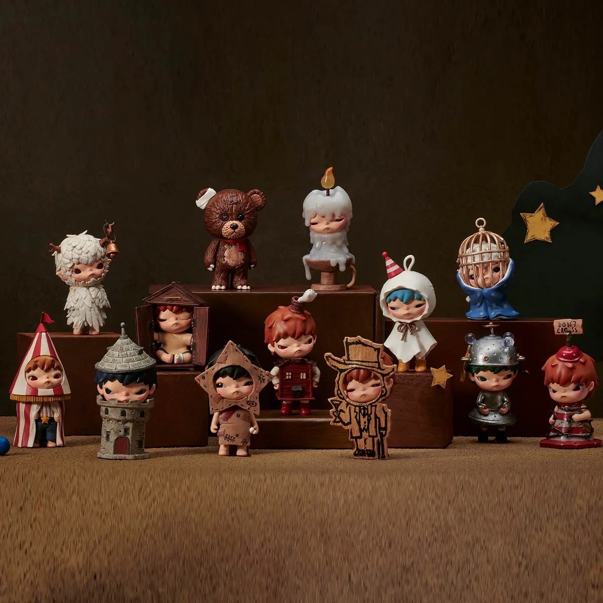
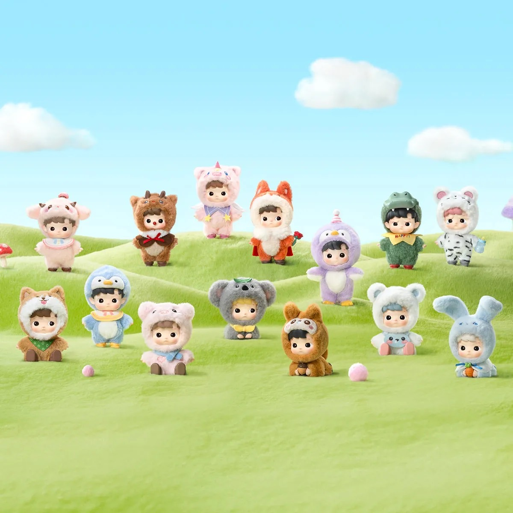
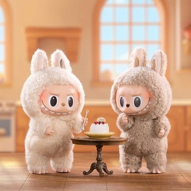
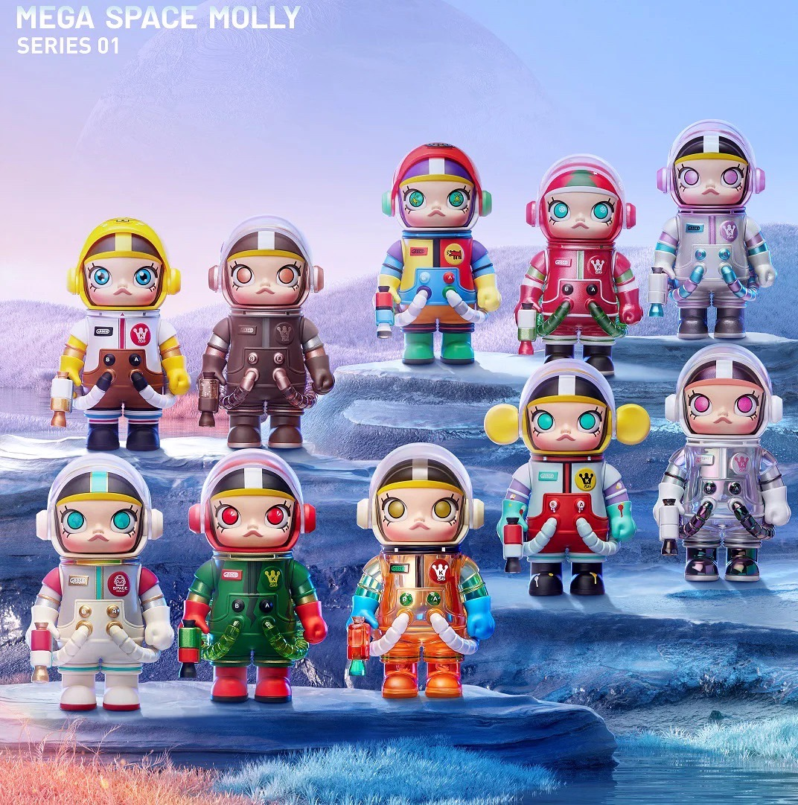
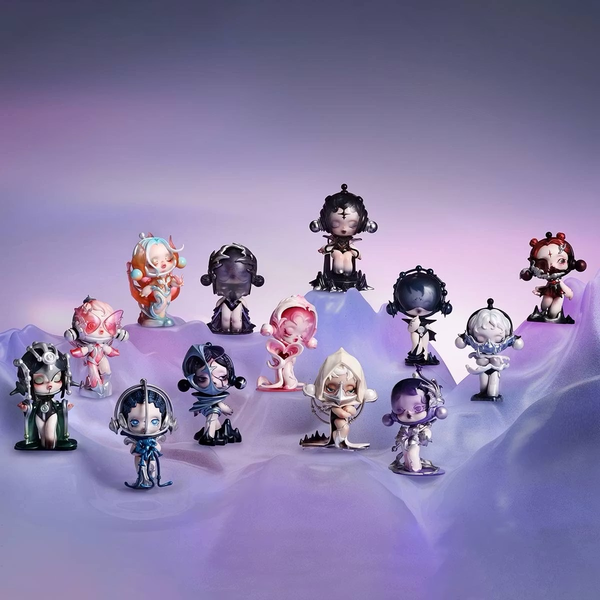

✮ Art Toy ✮
แหล่งที่มา:www.popmart.com
⊹ Hirono Shelter ⊹
✦ blind box series “Shelter” hitting us and you with various emotions! Shelter is not only a place to stay physically but also a way for us to hide from worries and sadness. Hirono metamorphoses into different scenes, items, and identities, finding his safe shelter in the complicated world!
⋆ Price:380 Bath ⋆
แหล่งที่มา:www.popmart.com
⊹ Crybaby ⊹
✦ Each featuring a teary-eyed character dressed in charming animal and storybook- inspired outfits. Clip them to your bag, keys, or anywhere you need a little extra emotion.
⋆ Price:380 Bath⋆
แหล่งที่มา:www.popmart.com
⊹ Hachipupu ⊹
✦ The little children all look cute, but they wear different fancy costumes, some of which are “animal or fantasy costumes”.
⋆ Price:380 Bath ⋆
แหล่งที่มา:www.popmart.com
⊹ Labubu ⊹
✦ Labubu is a "mischievous, kind-hearted female elf" created by Hong Kong artist Kasing Lung in his "The Monsters" series, inspired by Nordic folklore. Despite her fearsome appearance with sharp teeth and long ears, Labubu has a kind heart, is willing to help others, and has a playful and mischievous personality, representing the childish emotions and behaviors that still linger in adults.
⋆ Price:550 Bath ⋆
แหล่งที่มา:www.popmart.com
⊹ Space Molly ⊹
✦ MOLLY is by artist Kenny Wong, who was inspired by a young child. The character is stubborn, cute, intelligent, confident and fun-loving.
⋆ Price:380 Bath ⋆
แหล่งที่มา:www.popmart.com
⊹ Skullpanda ⊹
✦ Skullpanda is a sweet-looking girl with a mysterious personality. She has the ability to travel freely through time, space, and parallel worlds in order to find her true identity.
⋆ Price:380 Bath ⋆